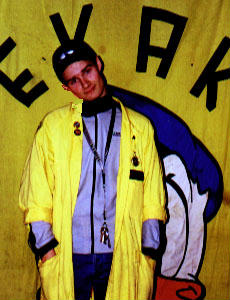
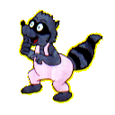

Bror Tvättbjörn
Erik Nordborg
| 
Hej! Jag heter Bror Tvättbjörn och är øhlchef i EKAK. Det betyder att jag
har hand om den otroligt viktiga uppgiften att hålla både EKAK och kylen
till bredden fulla med blå, men också att tillreda chili (och ibland oxå
annan mat). Annars heter jag Erik.
|
| 
Bror Tvättbjörn, till yrket fiskare, brukar dyka upp när hans gode vän Bror
Kanin råkat i trubbel. Likt mig själv är en av hans favoritsysslor att glida
fram på snö med en, eller kanske ett par brädor under tassarna. |
|